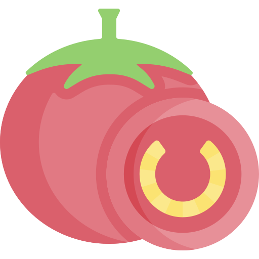

An online Pomodoro timer to be focused and reward yourself!

What is Pomodoro Technique?
The Pomodoro Technique is created by Francesco Cirillo for a more
productive way to work and study.
The technique uses a timer to break down work into small interval
which is mostly 25 minutes, separated by short breaks.
Each interval is known as a pomodoro, from the Italian word for
'tomato', after the tomato-shaped kitchen timer that Cirillo used as
a university student.
What is PomoReward?
The aim of this app is to help me and you focus on any task you are
working on, such as study, writing, or coding.
This isn't just yet another pomodoro timer , This has been created
for those wanting to be focused , make a habit and reward themselves
.
For example : every time you use this timer , you will get 100+
points in your account (navigate over dashboard) and decide stuffs
yourself regarding what rewards you'll be giving yourself based on
those points .
Another example : I'll myself add an anime waifu store like thing
here at this site, where I could purchase waifu cards/quality pics
in exchange of my points , this is just to lure myself to be focused
and get my tasks done so I could get those pics as rewards later , I
know this sounds just too stupid but this trick works on me xD and
similarly you can set certain things for yourself to work on :).